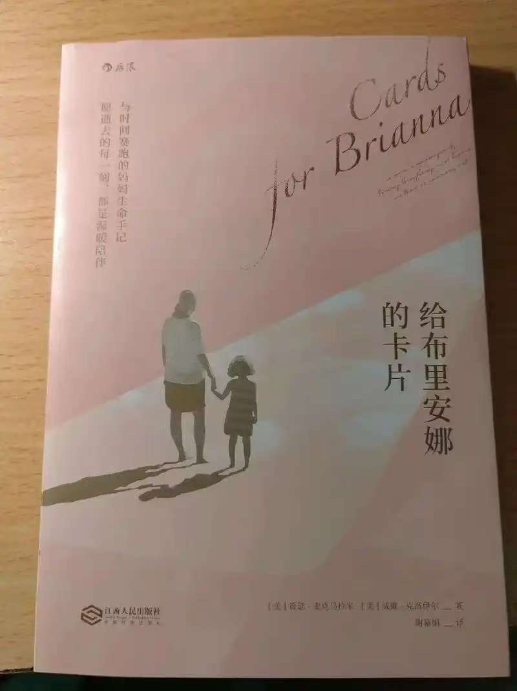
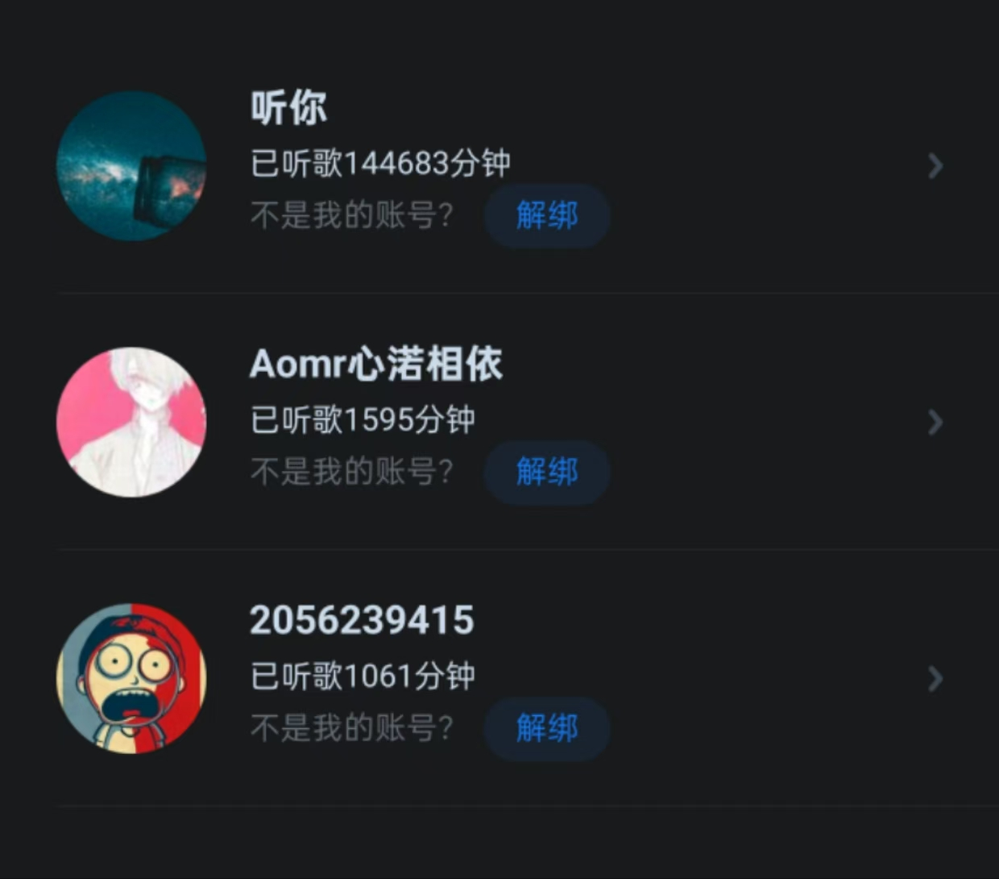
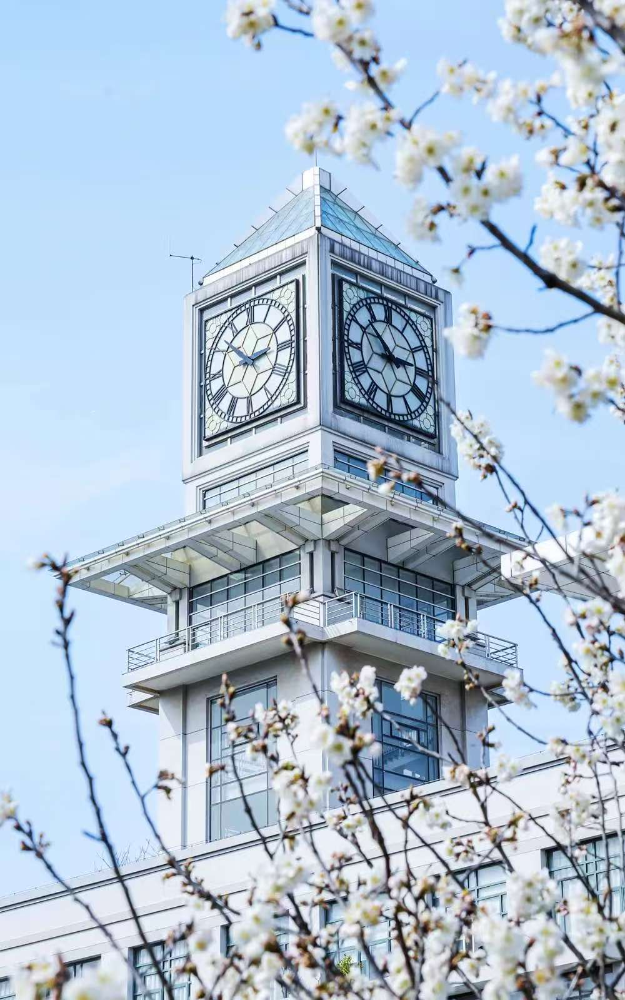

我的兴趣爱好
除了工作和学习，我也有着丰富多彩的兴趣爱好，它们帮助我放松身心、拓宽视野。
跑步
我非常喜欢探索大自然，跑步是我周末最爱的活动之一。无论是公园还是操场， 奔跑在其中都能让我感受到内心的平静和自由。
阅读

书籍是通往世界的窗户。我喜欢阅读各类书籍，从历史小说到科幻文学，从哲学思想到技术专著。 阅读不仅增长知识，更能激发思考，带来精神上的愉悦。
音乐

音乐对我来说是一种心灵的享受。尝试不同的音乐，研究时代的声音， 并为朋友推荐好听的音乐，这让非常满足。
摄影

我热爱用镜头记录生活中的美好瞬间。无论是壮丽的自然风光，还是街头巷尾的人文气息， 都希望能通过照片传递出它们的独特魅力。